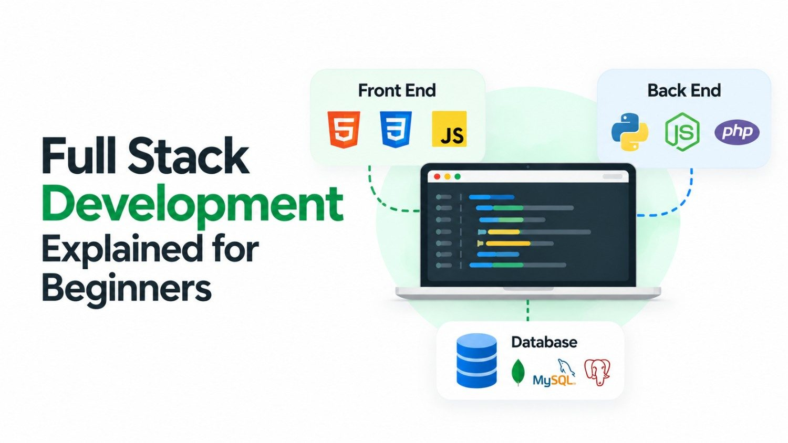

The digital world runs on software and behind every web application, e-commerce store, or social platform you use daily, there is a developer who built it from the ground up. Full Stack Development is the discipline that empowers one person to build both the parts a user sees and the powerful systems running underneath. If you are exploring a career in technology or simply want to understand what developers actually do, this guide is your starting point.
What Is Full Stack Development?
Full Stack Development refers to the process of building complete web applications - from the visual interface that users interact with, all the way to the server, database, and business logic that power it behind the scenes. A full stack developer is a professional skilled in both frontend development (what you see on screen) and backend development (what happens on the server).
Think of a restaurant. The dining area - the décor, the menu, the lighting - is the frontend. The kitchen where food is prepared, ingredients are stored, and orders are processed is the backend. A full stack developer is someone who can design the dining room and run the kitchen efficiently.
Breaking Down the Stack
Frontend - The Client Side
The frontend is everything a user directly interacts with in a web browser or mobile app. It encompasses layout, typography, buttons, animations, forms, and navigation. Frontend technologies form the presentation layer of any web product.
The trio of languages that every web browser understands. HTML structures content, CSS styles it visually, and JavaScript makes it interactive and dynamic.
Modern JavaScript frameworks used to build fast, component-based user interfaces. React, maintained by Meta, is the most widely adopted in the industry today.
Backend - The Server Side
The backend handles the logic, authentication, data processing, and communication between your application and the database. It is the application layer that users never see but always depend on. Every time you log in, place an order, or submit a form, the backend is doing the heavy lifting.
Server-side programming languages and runtimes used to process requests, run business logic, and communicate with databases. Node.js allows JavaScript to run on the server, making it a natural fit for full stack workflows.
Protocols that allow the frontend and backend to exchange data. APIs are the bridges between different parts of an application and between your app and third-party services.
Database - The Data Layer
Every meaningful application stores data - user profiles, product listings, transactions, content. The database layer is responsible for storing, organising, and retrieving this information efficiently.
MySQL and PostgreSQL are relational databases ideal for structured data, while MongoDB is a document-based NoSQL database suited for flexible, high-volume data. Choosing the right database depends on your application's needs.
DevOps - Deployment & Infrastructure
A well-rounded full stack developer also understands how to deploy applications to the web and manage the infrastructure that keeps them running. This includes cloud platforms, CI/CD pipelines, version control, and containerisation.
Git tracks code changes and enables collaboration. Docker packages applications into portable containers. Platforms like AWS, Google Cloud, and Vercel host and scale your web applications reliably.
Popular Full Stack Technology Combinations
Developers rarely work with individual tools in isolation. Instead, they adopt technology stacks - curated combinations of frontend, backend, and database tools that work seamlessly together. Here are the most widely used stacks in the industry:
- MERN Stack: MongoDB, Express.js, React, Node.js - ideal for JavaScript developers building modern SPAs
- MEAN Stack: MongoDB, Express.js, Angular, Node.js - enterprise-friendly and type-safe with Angular
- LAMP Stack: Linux, Apache, MySQL, PHP - a battle-tested classic powering millions of websites including WordPress
- Django + React: Python's Django for the backend paired with React for the frontend - popular in data-driven applications
- Next.js: A React-based framework that handles both frontend rendering and backend API routes in a single project
Planning to Build a Web Application?
Our full stack development team can bring your idea to life - from UI design to server deployment.
Skills Every Full Stack Developer Needs
Becoming a competent full stack developer requires both technical proficiency and a problem-solving mindset. Here is a practical breakdown of what you need to learn:
- Version control with Git - essential for managing code, collaborating with teams, and tracking project history
- Responsive web design - building layouts that work flawlessly across desktop, tablet, and mobile devices
- API integration - connecting your application with third-party services like payment gateways and social platforms
- Authentication & security - implementing user login, sessions, and protecting data from common web vulnerabilities
- Agile methodology - collaborating effectively in development teams using iterative workflows
Full Stack Development vs Specialisation
You might wonder - why learn everything instead of mastering just one layer? The answer depends on your goals. Full stack developers are extremely valuable in startups and small teams where one person must own an entire feature end-to-end. They move fast, bridge communication gaps between frontend and backend teams, and understand the full product lifecycle.
Specialising as a frontend engineer or backend engineer offers depth - mastery of complex systems, advanced optimisation, and architectural decisions that full stack generalists may not reach. Neither path is superior; the right choice depends on the kind of work that excites you most.
How to Get Started in Full Stack Development
The good news for beginners is that the learning path has never been clearer. Structured resources, interactive platforms, and open-source projects make full stack development accessible without a formal degree. Here is a straightforward approach to begin:
- Start with HTML and CSS - understand how web pages are structured and styled
- Learn JavaScript fundamentals before touching any framework
- Build small projects - a to-do app, a portfolio page, or a weather app using a public API
- Pick one backend language - Node.js is ideal if you want to stay in the JavaScript ecosystem
- Learn a database - start with MongoDB for flexibility or MySQL for structured data
- Deploy your first project using Vercel or Netlify for the frontend and Railway or Render for the backend
- Study real-world codebases on GitHub and contribute to open-source projects
Conclusion
Full Stack Development is one of the most rewarding and versatile skill sets in the technology industry today. By understanding both the frontend experience and the backend infrastructure that supports it, full stack developers hold a uniquely powerful position in product teams and the job market alike.
Whether your goal is to launch your own web application, land a developer role at a growing company, or simply understand how the digital world is built - the journey into full stack development is absolutely worth taking. Start with the fundamentals, build consistently, and let curiosity drive your growth.